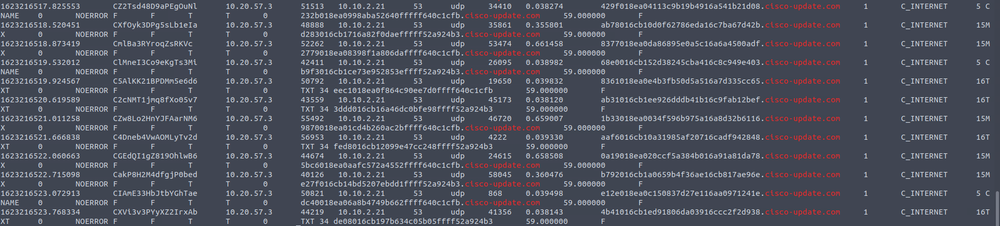

An alert triggered:
"Anomalous DNS Activity".The case was assigned to you. Inspect the PCAP and retrieve the artefacts to confirm this alert is a true positive.
Firstly, we need to navigate to the directory where the pcap file was saved.
Once we have located the packet capture, we will execute a predefined Zeek script called "local." This script instructs Zeek to analyze the network traffic that was captured in the "Anomalous-dns.pcap" file.
zeek -C -r Anomalous-dns.pcap local
^File ^Script
After the analysis is completed, Zeek will generate new files in the same directory where the analysis was conducted.
Taking a look at the table bellow we can have a more clear perception of what we should do.

As this investigation is initiated by an alert, our initial step will be to review the contents of the "notice.log."
cat notice.log
Now that we know what triggered the alert—'Only observed 0 TCP ACKs and was expecting at least 1'—this could indicate that an attacker used Nmap to identify which ports were open on our network.
We will conduct a examination of the DNS queries, with the hope that something will become noticeable.
cat dns.log | zeek-cut query
We're noticing a considerable number of queries to "cisco-update.com" and a limited number to "rohdes.edu." To enhance clarity, let's refine the presentation by filtering the output to exhibit only the domains and exclusively display distinct domains, while also tallying how frequently they have appeared
cat dns.log | zeek-cut query | rev | cut -d '.' -f 1-2 | rev | sort | uniq -c
1-“_tcp.local”:
"_tcp.local" is a special domain name used to advertise and discover services available on a local network. This is often used in scenarios where devices in a local network want to discover and communicate with each other using DNS-like mechanisms. If we dive a bit deeper we will find that there were two connection made one is a MAC Address and a IP Address “10.20.57.3”, that is outside of out local network, and they used the Internet Printing Protocol (IPP), a network protocol that allows for printing over the Internet. It could be malicious, but from now is only that.

2- “cisco-update.com”, “in-addr.arpa”, “ip6.arpa”, “ubunto.com”
There is no immediately apparent indication of malicious activity in these cases. The domains "cisco-update.com" and "ubuntu.com" appear to be normal. The terms "in-addr.arpa" and "ip6.arpa" are associated with reverse DNS lookups for IPv4 and IPv6 addresses, respectively.
3-"rhodes.edu"
Let's gather more information about who made this request
cat dns.log | grep rhodes.edu
There is a lot here, we see that all of this connections have been made by the same IP Address we found “10.20.57,3” trying to use IPP, it could be used as a covert channel for communication within a compromised network. Attackers might embed messages or commands within IPP requests and responses to bypass security controls. Also now the ubunto connection does not seem that casual we could be witnessing a DNS Tunneling attack
Let's check if the dns queries made to "cisco-update.com" also originate from the same IP Address
cat dns.log | grep cisco-update.com

Similar to the pattern observed with "rohdes.edu," in the case of "cisco-update.com," the connections consistently originate from "10.20.57.3" and establish a connection with "10.10.2.21." This latter IP address could potentially be a server that's disguising its activities under the guise of well-known domains like "cisco" and "ubuntu." This raises even more suspicions about the possibility of DNS tunneling.
We found the source and destiny IP Addresses of a possible DNS Tunneling attack, and the domains he used to hide from CyberSecurity Analysts. As a SOC Analyst I now i would escalate this alert to the SOC 2 team to determine the exact nature of the behavior, conduct a more comprehensive investigation. By looking at the payload of the TCP connection, analyzing the network traffic over time, and cross-referencing this behavior with other logs and indicators.